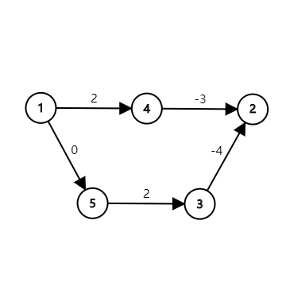
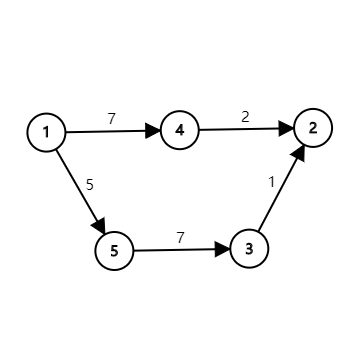

最短路
定义¶
（还记得这些定义吗？在阅读下列内容之前，请务必了解 图论相关概念 中的基础部分。）
- 路径
- 最短路
- 有向图中的最短路、无向图中的最短路
- 单源最短路、每对结点之间的最短路
性质¶
对于边权为正的图，任意两个结点之间的最短路，不会经过重复的结点。
对于边权为正的图，任意两个结点之间的最短路，不会经过重复的边。
对于边权为正的图，任意两个结点之间的最短路，任意一条的结点数不会超过 ，边数不会超过 。
Floyd 算法¶
是用来求任意两个结点之间的最短路的。
复杂度比较高，但是常数小，容易实现。（我会说只有三个 for 吗？）
适用于任何图，不管有向无向，边权正负，但是最短路必须存在。（不能有个负环）
实现¶
我们定义一个数组 f[k][x][y]，表示只允许经过结点 到 （也就是说，在子图 中的路径，注意， 与 不一定在这个子图中），结点 到结点 的最短路长度。
很显然，f[n][x][y] 就是结点 到结点 的最短路长度（因为 即为 本身，其表示的最短路径就是所求路径）。
我们来考虑怎么求这个数组
f[0][x][y]： 与 的边权，或者 ，或者 （f[0][x][y] 什么时候应该是 ？当 与 间有直接相连的边的时候，为它们的边权；当 的时候为零，因为到本身的距离为零；当 与 没有直接相连的边的时候，为 ）。
f[k][x][y] = min(f[k-1][x][y], f[k-1][x][k]+f[k-1][k][y])（f[k-1][x][y]，为不经过 点的最短路径，而 f[k-1][x][k]+f[k-1][k][y]，为经过了 点的最短路）。
上面两行都显然是对的，所以说这个做法空间是 ，我们需要依次增加问题规模（ 从 到 ），判断任意两点在当前问题规模下的最短路。
1 2 3 4 5 6 7 | for (k = 1; k <= n; k++) {
for (x = 1; x <= n; x++) {
for (y = 1; y <= n; y++) {
f[k][x][y] = min(f[k - 1][x][y], f[k - 1][x][k] + f[k - 1][k][y]);
}
}
}
|
因为第一维对结果无影响，我们可以发现数组的第一维是可以省略的，于是可以直接改成 f[x][y] = min(f[x][y], f[x][k]+f[k][y])。
证明第一维对结果无影响
我们注意到如果放在一个给定第一维 k 二维数组中，f[x][k] 与 f[k][y] 在某一行和某一列。而 f[x][y] 则是该行和该列的交叉点上的元素。
现在我们需要证明将 f[k][x][y] 直接在原地更改也不会更改它的结果：我们注意到 f[k][x][y] 的涵义是第一维为 k-1 这一行和这一列的所有元素的最小值，包含了 f[k-1][i][j]，那么我在原地进行更改也不会改变最小值的值，因为如果将该三维矩阵压缩为二维，则所求结果 f[x][y] 一开始即为原 f[k-1][x][y] 的值，最后依然会成为该行和该列的最小值。
故可以压缩。
1 2 3 4 5 6 7 | for (k = 1; k <= n; k++) {
for (x = 1; x <= n; x++) {
for (y = 1; y <= n; y++) {
f[x][y] = min(f[x][y], f[x][k] + f[k][y]);
}
}
}
|
综上时间复杂度是 ，空间复杂度是 。
应用¶
给一个正权无向图，找一个最小权值和的环。
首先这一定是一个简单环。
想一想这个环是怎么构成的。
考虑环上编号最大的结点 u。
f[u-1][x][y] 和 (u,x), (u,y）共同构成了环。
在 Floyd 的过程中枚举 u，计算这个和的最小值即可。
。
已知一个有向图中任意两点之间是否有连边，要求判断任意两点是否连通。
该问题即是求 图的传递闭包。
我们只需要按照 Floyd 的过程，逐个加入点判断一下。
只是此时的边的边权变为 ，而取 变成了 或 运算。
再进一步用 bitset 优化，复杂度可以到 。
1 2 3 4 | // std::bitset<SIZE> f[SIZE];
for (k = 1; k <= n; k++)
for (i = 1; i <= n; i++)
if (f[i][k]) f[i] = f[i] | f[k];
|
Bellman-Ford 算法¶
一种基于松弛（relax）操作的最短路算法。
支持负权。
能找到某个结点出发到所有结点的最短路，或者报告某些最短路不存在。
在国内 OI 界，你可能听说过的“SPFA”，就是 Bellman-Ford 算法的一种实现。（优化）
实现¶
假设结点为 。
先定义 为 到 （当前）的最短路径长度。
操作指：.
是从哪里来的呢？
三角形不等式：。
证明：反证法，如果不满足，那么可以用松弛操作来更新 的值。
Bellman-Ford 算法如下：
1 | while (1) for each edge(u, v) relax(u, v);
|
当一次循环中没有松弛操作成功时停止。
每次循环是 的，那么最多会循环多少次呢？
答案是 ！（如果有一个 能走到的负环就会这样）
但是此时某些结点的最短路不存在。
我们考虑最短路存在的时候。
由于一次松弛操作会使最短路的边数至少 ，而最短路的边数最多为 。
所以最多执行 次松弛操作，即最多循环 次。
总时间复杂度 。（对于最短路存在的图）
1 2 3 4 5 6 7 8 9 10 11 | relax(u, v) {
dist[v] = min(dist[v], dist[u] + edge_len(u, v));
}
for (i = 1; i <= n; i++) {
dist[i] = edge_len(S, i);
}
for (i = 1; i < n; i++) {
for each edge(u, v) {
relax(u, v);
}
}
|
注：这里的 表示边的权值，如果该边不存在则为 ， 则为 。
应用¶
给一张有向图，问是否存在负权环。
做法很简单，跑 Bellman-Ford 算法，如果有个点被松弛成功了 次，那么就一定存在。
如果 次之内算法结束了，就一定不存在。
队列优化：SPFA¶
即 Shortest Path Faster Algorithm。
很多时候我们并不需要那么多无用的松弛操作。
很显然，只有上一次被松弛的结点，所连接的边，才有可能引起下一次的松弛操作。
那么我们用队列来维护“哪些结点可能会引起松弛操作”，就能只访问必要的边了。
1 2 3 4 5 6 7 8 9 10 11 12 13 | q = new queue();
q.push(S);
in_queue[S] = true;
while (!q.empty()) {
u = q.pop();
in_queue[u] = false;
for each edge(u, v) {
if (relax(u, v) && !in_queue[v]) {
q.push(v);
in_queue[v] = true;
}
}
}
|
虽然在大多数情况下 SPFA 跑得很快，但其最坏情况下的时间复杂度为 ，将其卡到这个复杂度也是不难的，所以考试时要谨慎使用（在没有负权边时最好使用 Dijkstra 算法，在有负权边且题目中的图没有特殊性质时，若 SPFA 是标算的一部分，题目不应当给出 Bellman-Ford 算法无法通过的数据范围）。
Bellman-Ford 的其他优化
除了队列优化（SPFA）之外，Bellman-Ford 还有其他形式的优化，这些优化在部分图上效果明显，但在某些特殊图上，最坏复杂度可能达到指数级。
- 堆优化：将队列换成堆，与 Dijkstra 的区别是允许一个点多次入队。在有负权边的图可能被卡成指数级复杂度。
- 栈优化：将队列换成栈（即将原来的 BFS 过程变成 DFS），在寻找负环时可能具有更高效率，但最坏时间复杂度仍然为指数级。
- LLL 优化：将普通队列换成双端队列，每次将入队结点距离和队内距离平均值比较，如果更大则插入至队尾，否则插入队首。
- SLF 优化：将普通队列换成双端队列，每次将入队结点距离和队首比较，如果更大则插入至队尾，否则插入队首。
- D´Esopo-Pape 算法：将普通队列换成双端队列，如果一个节点之前没有入队，则将其插入队尾，否则插入队首。
更多优化以及针对这些优化的 Hack 方法，可以看 fstqwq 在知乎上的回答。
Dijkstra 算法¶
Dijkstra 是个人名（荷兰姓氏）。
IPA:/ˈdikstrɑ/或/ˈdɛikstrɑ/。
这种算法只适用于非负权图，但是时间复杂度非常优秀。
也是用来求单源最短路径的算法。
实现¶
主要思想是，将结点分成两个集合：已确定最短路长度的，未确定的。
一开始第一个集合里只有 。
然后重复这些操作：
- 对那些刚刚被加入第一个集合的结点的所有出边执行松弛操作。
- 从第二个集合中，选取一个最短路长度最小的结点，移到第一个集合中。
直到第二个集合为空，算法结束。
时间复杂度：只用分析集合操作， 次 delete-min， 次 decrease-key。
如果用暴力：。
如果用堆 。
如果用 priority_queue：。
（注：如果使用 priority_queue，无法删除某一个旧的结点，只能插入一个权值更小的编号相同结点，这样操作导致堆中元素是 的）
如果用线段树（ZKW 线段树）：
如果用 Fibonacci 堆：（这就是为啥优秀了）。
等等，还没说正确性呢！
分两步证明：先证明任何时候第一个集合中的元素的 一定不大于第二个集合中的。
再证明第一个集合中的元素的最短路已经确定。
第一步，一开始时成立（基础），在每一步中，加入集合的元素一定是最大值，且是另一边最小值，每次松弛操作又是加上非负数，所以仍然成立。（归纳）（利用非负权值的性质）
第二步，考虑每次加进来的结点，到他的最短路，上一步必然是第一个集合中的元素（否则他不会是第二个集合中的最小值，而且有第一步的性质），又因为第一个集合内的点已经全部松弛过了，所以最短路显然确定了。
1 2 3 4 5 6 7 8 9 10 11 | H = new heap();
H.insert(S, 0);
dist[S] = 0;
for (i = 1; i <= n; i++) {
u = H.delete_min();
for each edge(u, v) {
if (relax(u, v)) {
H.decrease_key(v, dist[v]);
}
}
}
|
以下是该算法的 C++ 实现
1 2 3 4 5 6 7 8 9 10 11 12 13 14 15 16 17 18 19 20 21 22 23 24 25 26 27 28 29 | vector<vector<LL>> Ps; // 图的邻接矩阵
vector<LL> dist; // min_len 的运行结果存储位置
// i: 源点在点集中的下标
void min_len(size_t i) {
using Pair = pair<LL, size_t>; // pair 的排序是先第一分量后第二分量，
// 通过这个可以调整它在堆中的位置
// 初始化 dist
for (auto &k : dist) k = LLONG_MAX;
dist[i] = 0;
// 初始化小根堆
priority_queue<Pair, vector<Pair>, greater<Pair>> Q; // 小根堆
Q.push(Pair(0, i));
while (!Q.empty()) {
auto k = Q.top().second;
Q.pop();
for (size_t i = 0; i < Ps[k].size(); i++) {
// 如果 k 和 i 有边连（这里设置 Ps[k][i] == 0 时无边连接）
if (Ps[k][i] && dist[k] + Ps[k][i] < dist[i]) {
// 松弛操作
dist[i] = dist[k] + Ps[k][i];
Q.push(Pair(dist[i], i));
}
}
}
}
|
Johnson 全源最短路径算法¶
Johnson 和 Floyd 一样，是一种能求出无负环图上任意两点间最短路径的算法。该算法在 1977 年由 Donald B. Johnson 提出。
任意两点间的最短路可以通过枚举起点，跑 次 Bellman-Ford 算法解决，时间复杂度是 的，也可以直接用 Floyd 算法解决，时间复杂度为 。
注意到堆优化的 Dijkstra 算法求单源最短路径的时间复杂度比 Bellman-Ford 更优，如果枚举起点，跑 次 Dijkstra 算法，就可以在 （取决于 Dijkstra 算法的实现）的时间复杂度内解决本问题，比上述跑 次 Bellman-Ford 算法的时间复杂度更优秀，在稀疏图上也比 Floyd 算法的时间复杂度更加优秀。
但 Dijkstra 算法不能正确求解带负权边的最短路，因此我们需要对原图上的边进行预处理，确保所有边的边权均非负。
一种容易想到的方法是给所有边的边权同时加上一个正数 ，从而让所有边的边权均非负。如果新图上起点到终点的最短路经过了 条边，则将最短路减去 即可得到实际最短路。
但这样的方法是错误的。考虑下图：

的最短路为 ，长度为 。
但假如我们把每条边的边权加上 呢？

新图上 的最短路为 ，已经不是实际的最短路了。
Johnson 算法则通过另外一种方法来给每条边重新标注边权。
我们新建一个虚拟节点（在这里我们就设它的编号为 ）。从这个点向其他所有点连一条边权为 的边。
接下来用 Bellman-Ford 算法求出从 号点到其他所有点的最短路，记为 。
假如存在一条从 点到 点，边权为 的边，则我们将该边的边权重新设置为 。
接下来以每个点为起点，跑 轮 Dijkstra 算法即可求出任意两点间的最短路了。
一开始的 Bellman-Ford 算法并不是时间上的瓶颈，若使用 priority_queue 实现 Dijkstra 算法，该算法的时间复杂度是 。
正确性证明¶
为什么这样重新标注边权的方式是正确的呢？
在讨论这个问题之前，我们先讨论一个物理概念——势能。
诸如重力势能，电势能这样的势能都有一个特点，势能的变化量只和起点和终点的相对位置有关，而与起点到终点所走的路径无关。
势能还有一个特点，势能的绝对值往往取决于设置的零势能点，但无论将零势能点设置在哪里，两点间势能的差值是一定的。
接下来回到正题。
在重新标记后的图上，从 点到 点的一条路径 的长度表达式如下：
化简后得到：
无论我们从 到 走的是哪一条路径， 的值是不变的，这正与势能的性质相吻合！
为了方便，下面我们就把 称为 点的势能。
上面的新图中 的最短路的长度表达式由两部分组成，前面的边权和为原图中 的最短路，后面则是两点间的势能差。因为两点间势能的差为定值，因此原图上 的最短路与新图上 的最短路相对应。
到这里我们的正确性证明已经解决了一半——我们证明了重新标注边权后图上的最短路径仍然是原来的最短路径。接下来我们需要证明新图中所有边的边权非负，因为在非负权图上，Dijkstra 算法能够保证得出正确的结果。
根据三角形不等式，图上任意一边 上两点满足：。这条边重新标记后的边权为 。这样我们证明了新图上的边权均非负。
这样，我们就证明了 Johnson 算法的正确性。
不同方法的比较¶
| 最短路算法 | Floyd | Bellman-Ford | Dijkstra | Johnson |
|---|---|---|---|---|
| 最短路类型 | 每对结点之间的最短路 | 单源最短路 | 单源最短路 | 每对结点之间的最短路 |
| 作用于 | 没有负环的图 | 任意图 | 非负权图 | 没有负环的图 |
| 能否检测负环？ | 能 | 能 | 不能 | 不能 |
| 推荐作用图的大小 | 小 | 中/小 | 大/中 | 大/中 |
| 时间复杂度 |
注：表中的 Dijkstra 算法在计算复杂度时均用 priority_queue 实现。
输出方案¶
开一个 pre 数组，在更新距离的时候记录下来后面的点是如何转移过去的，算法结束前再递归地输出路径即可。
比如 Floyd 就要记录 pre[i][j] = k;，Bellman-Ford 和 Dijkstra 一般记录 pre[v] = u。
本页面部分内容译自博文 Тернарный поиск 与其英文翻译版 D´Esopo-Pape algorithm。其中俄文版版权协议为 Public Domain + Leave a Link；英文版版权协议为 CC-BY-SA 4.0。
build本页面最近更新：，更新历史
edit发现错误？想一起完善？ 在 GitHub 上编辑此页！
people本页面贡献者：OI-wiki
copyright本页面的全部内容在 CC BY-SA 4.0 和 SATA 协议之条款下提供，附加条款亦可能应用